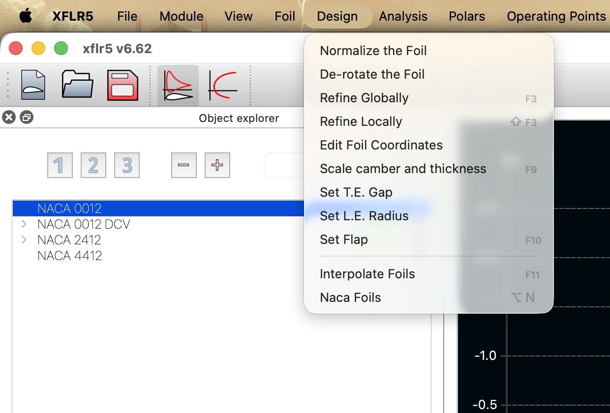
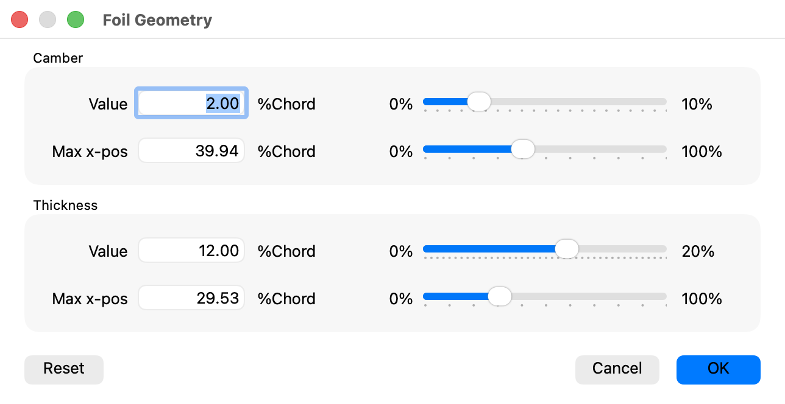
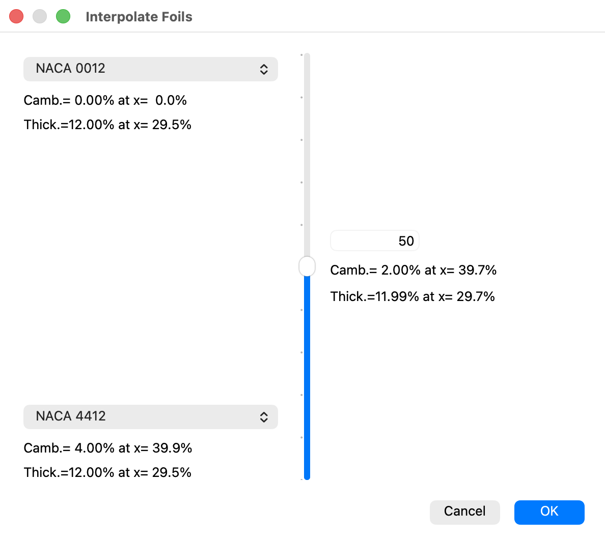
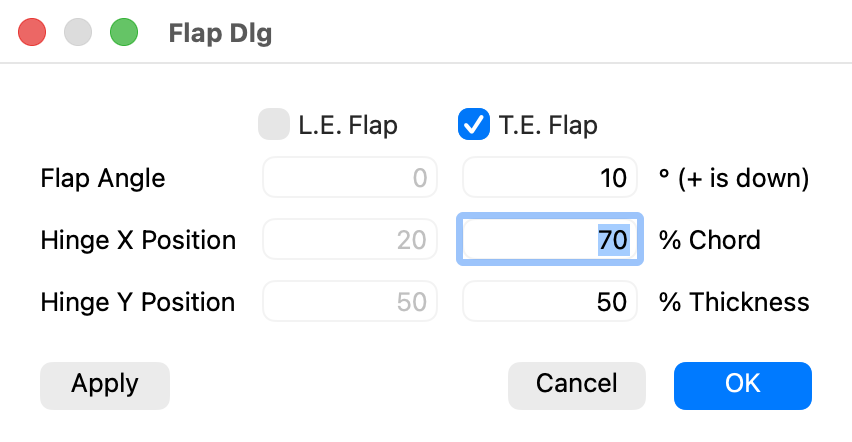
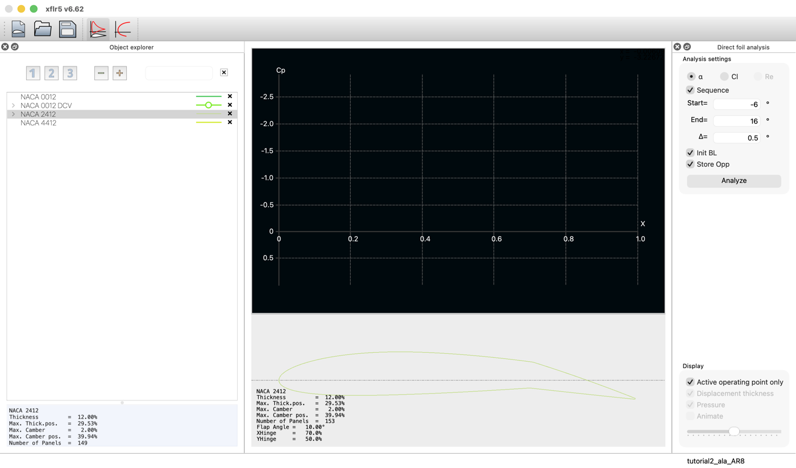
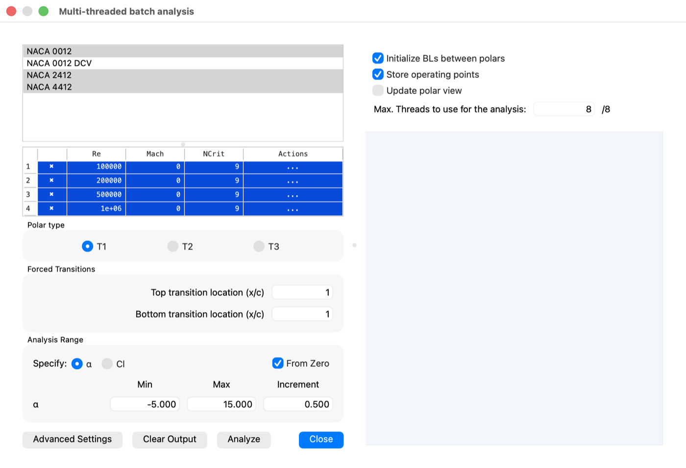
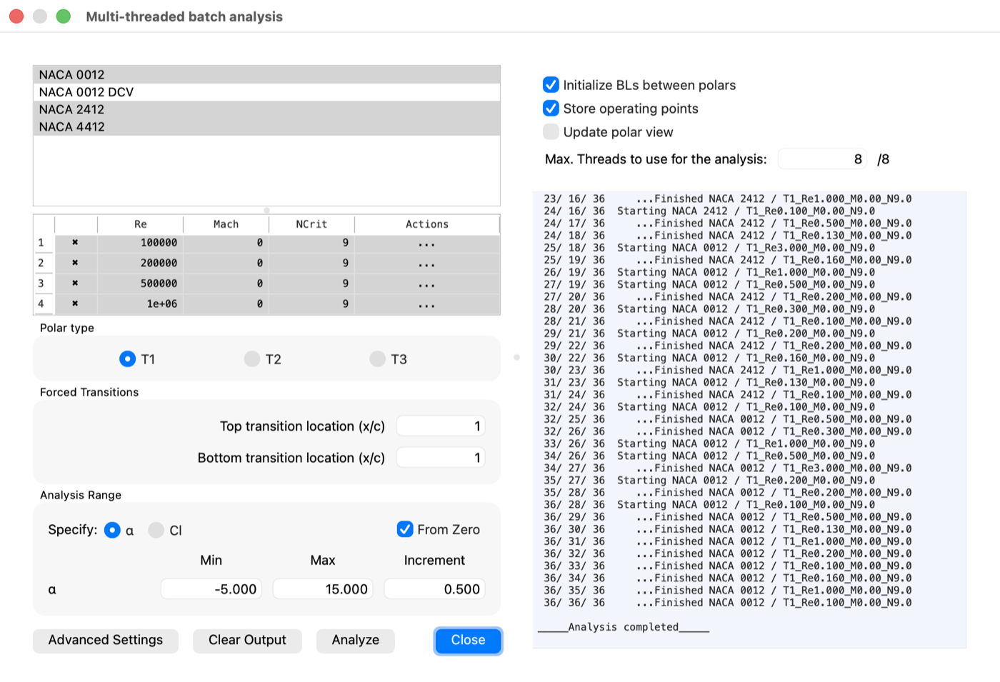
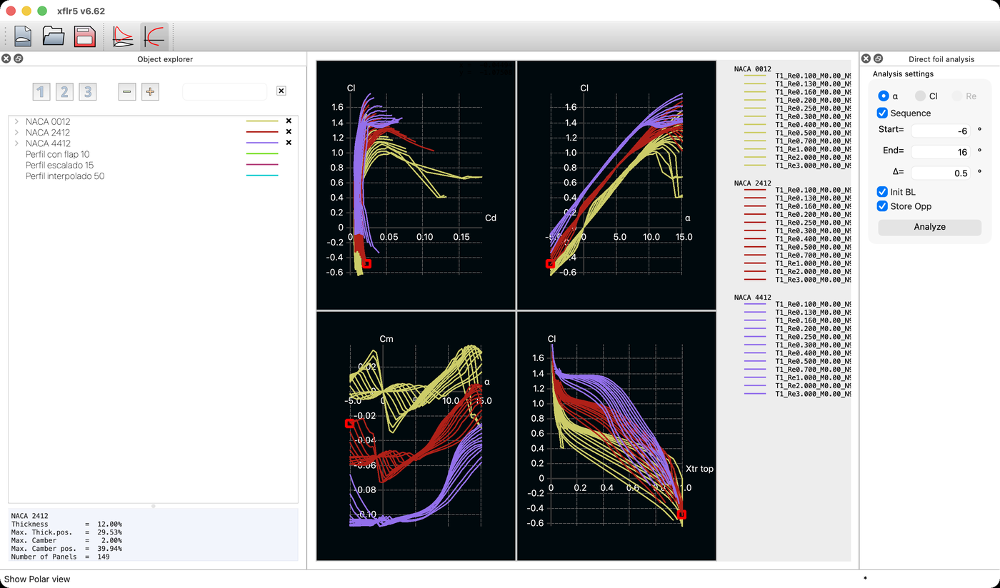
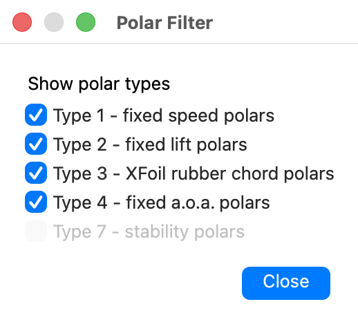

Comparing airfoils properly takes a grid rather than a run. The geometry tools that build the candidates, the batch analysis that sweeps them, and the method for reading the result.
XFLR5 · Tutorial 1.2
Análisis por lotes y geometría del perfil
Comparar perfiles con rigor exige una rejilla, no una corrida. Las herramientas que construyen los candidatos, el análisis por lotes que los barre, y el método para leer el resultado.
XFLR5 · Tutorial 1.2
Stapelanalyse und Profilgeometrie
Ein sauberer Profilvergleich verlangt ein Raster statt eines Laufs. Die Werkzeuge, die die Kandidaten erzeugen, der Stapellauf, der sie durchrechnet, und die Methode, das Ergebnis zu lesen.
Estimated reading: 40 minLectura estimada: 40 minLesedauer: ca. 40 minLevel: undergraduateNivel: licenciaturaNiveau: BachelorVerified on XFLR5 v6.62Verificado en XFLR5 v6.62Geprüft mit XFLR5 v6.62
Full English translation in preparation. Each section below carries a summary of its content; the complete text, figures and tables are available in the Spanish version, which the ES button above selects.
Compare airfoils with a method, modify a geometry in a controlled way — scaling camber and thickness, interpolating, adding a flap — run dozens of polars in one go, and clear the result afterwards.
The need
Why comparing airfoils takes a grid, not a run
An airfoil is not judged at a point. The Reynolds number of an aircraft varies by a factor of three or four between approach and cruise, and the airfoil that wins at one end can lose at the other. The unit of comparison is therefore a grid — every candidate at every Reynolds number of the mission — and the batch analysis exists to make that grid without letting any other parameter drift.
Scope and limits
What the batch does, and what it does not
The batch runs every combination of the airfoil list with the Reynolds table, applying the same polar type, \(N_{\mathrm{crit}}\), forced transition and angle range to all of them. It does not equalise the panelling, does not check that the conditions make sense, and does not rank the results.
Orientation
Where each thing lives
Everything here lives in the XFoil Direct Analysis module: Design for the geometry operations and Analysis for the batch. The same geometry commands appear under Foil when Direct Foil Design is the active module. The family compared here is three four-digit NACA sections of equal thickness and increasing camber: 0012, 2412 and 4412.
Step 1
Scaling camber and thickness
The Foil Geometry dialogue exposes the four numbers that are the four digits of a NACA designation, each on a continuous slider. That turns it into a generator of parametric families. After scaling, normalise and refine again: the contour has been rebuilt. On accepting, the name dialogue proposes the original airfoil's name; accepting it unchanged silently replaces the original and deletes its polars, so type a new name. The same dialogue follows a flap (current airfoil) and an interpolation (the airfoil in the upper selector).
Step 2
Interpolating between airfoils
Interpolating halfway between the NACA 0012 and the NACA 4412 returns 2.00 % camber at 39.7 % and 11.99 % thickness — the NACA 2412. The real use is generating the intermediate sections of a wing whose root and tip differ, so they can be seen and analysed rather than left to the mesher. The interpolation is geometric, so mixing distant families can produce curvatures neither original had.
Step 3
Adding a flap
Leading- or trailing-edge flap, with the sign convention printed in the dialogue itself — positive is down — and the hinge given as a percentage of chord and of thickness. A deflected flap is a different airfoil with its own polar: XFoil does not interpolate between deflections, so a control surface sweep means one airfoil per deflection.
Step 4
Defining the batch
The dialogue holds the airfoil list, the Reynolds table — which scrolls, and holds more rows than it shows — the polar type, the forced transition and the angle range, plus the options on the right that decide the running time. What is launched is the product of the list by the table.
Step 5
Running it, and what comes out
Thirty-six polars — three airfoils by twelve Reynolds numbers — completed in under a minute on eight threads. And then the problem nobody announces: thirty-six superimposed curves cannot be read.
Step 6
Clearing the clutter and reading the grid
The polar filter filters by type, not by curve: on a batch that is all Type 1 it hides nothing. Decluttering is done from the explorer, or with Hide All Polars. The grid is then read in two directions: across airfoils at fixed Reynolds, which shows the effect of geometry, and across Reynolds for one airfoil, which shows whether that conclusion survives the whole flight envelope.
Suggested practice
Choosing an airfoil for a given mission
Choose the wing section of a surveillance UAV with a 0.25 m chord flying between 12 and 40 m/s, from three NACA candidates plus a 15 %-thick section generated by scaling. Suggested practice, not an assignment.
Key points
Four statements and one relation
Comparing requires fixing every condition and varying one. An airfoil is judged over a Reynolds domain. A scaled, interpolated or flapped airfoil is a new airfoil. The polar filter filters by type. And the count: polars are airfoils times Reynolds numbers.
Common mistakes
Errors of interpretation that invalidate a comparison
Seven errors of interpretation, from expecting the polar filter to hide curves, through analysing a scaled airfoil without preparing it again, to choosing an airfoil from a single Reynolds number.
Sources
References
Abbott, I. H. y von Doenhoff, A. E. Theory of Wing Sections. Nueva York: Dover, 1959. Definición de las familias NACA y el significado geométrico de sus dígitos; capítulo 6 y apéndice I.
Drela, M. «XFOIL: An Analysis and Design System for Low Reynolds Number Airfoils», en Low Reynolds Number Aerodynamics. Berlín: Springer, 1989.
Deperrois, A. Guidelines for XFLR5, sección de análisis por lotes y de operaciones sobre la geometría del perfil.
Selig, M. S. UIUC Airfoil Data Site. Universidad de Illinois. Fuente de coordenadas y de datos experimentales a números de Reynolds bajos.
Screenshots taken from XFLR5 v6.62 on macOS. The batch documented in figures 7 to 9 was run expressly for this guide and its project accompanies it. The next tutorial closes the airfoil block with inverse design: obtaining a geometry from a target velocity distribution.
Objetivos de aprendizaje
Qué se debe poder hacer al terminar
El Tutorial 1.1 analizó un perfil. Elegir el perfil de un proyecto exige comparar muchos, y en un dominio de condiciones, no en un punto. Al terminar esta guía debe ser posible:
Explicar por qué una comparación entre perfiles sólo significa algo si todas las condiciones se fijan de antemano.
Modificar la geometría de un perfil de forma controlada: escalar curvatura y espesor, interpolar entre dos perfiles y añadir un flap.
Ejecutar decenas de polares en una sola corrida con el análisis por lotes, y saber qué opciones la aceleran.
Ordenar el resultado: qué oculta realmente el filtro de polares y qué no.
Leer una comparación en las dos direcciones que importan: entre perfiles a Reynolds fijo, y entre Reynolds para un mismo perfil.
La necesidad
Por qué comparar perfiles exige una rejilla, no una corrida
El Tutorial 1.1 terminó con una advertencia: dos perfiles evaluados con distinto \(Re\), distinto \(N_{\mathrm{crit}}\) o distinto panelado no están siendo comparados. Esa condición es necesaria, pero no basta.
El motivo es que un perfil no se juzga en un punto. El número de Reynolds de una aeronave cambia con la velocidad y con la altura: entre la aproximación y el crucero puede variar en un factor de tres o cuatro, y el perfil que gana en un extremo puede perder en el otro. Un perfil de flujo laminar con una cubeta de arrastre estrecha es excelente dentro de su cubeta y apenas correcto fuera de ella; uno más convencional no gana en ningún punto, pero tampoco pierde en ninguno.
De ahí que la unidad de comparación no sea una corrida sino una rejilla: todos los perfiles candidatos, en todos los números de Reynolds de la misión, con el resto de condiciones idénticas. Hacerlo a mano son decenas de corridas y otras tantas oportunidades de cambiar un parámetro sin darse cuenta.
El análisis por lotes existe exactamente para eso: se declaran los perfiles y los Reynolds una vez, y el programa recorre todas las combinaciones con los mismos ajustes. La ventaja no es la velocidad, aunque también: es que elimina la posibilidad de que dos casos difieran en algo que no se pretendía cambiar.
La familia que compara esta guía la forman tres perfiles NACA de cuatro dígitos con el mismo espesor y distinta curvatura: 0012, 2412 y 4412. Aislar una sola variable es lo que permitirá después atribuir las diferencias a algo concreto.
Figura 1.La familia que se va a comparar. Los tres perfiles del ejemplo comparten espesor —12 % de la cuerda— y difieren únicamente en la curvatura máxima: nula, 2 % y 4 %; en los dos que la tienen, situada al 40 % de la cuerda. Son, respectivamente, el primer y el segundo dígito de la designación. Aislar una sola variable es lo que permitirá después atribuir las diferencias a algo concreto. La escala vertical está exagerada cuatro veces; a escala real las tres líneas serían casi indistinguibles.
Alcance y límites
Qué hace el lote y qué no hace
Conviene delimitar qué hace y qué no hace el lote antes de configurarlo.
Lo que hace
Lo que no hace
Recorre todas las combinaciones de la lista de perfiles con la tabla de números de Reynolds
No varía el panelado: cada perfil se analiza con el que tenga, y si difieren, la comparación no es limpia
Aplica a todas el mismo tipo de polar, el mismo \(N_{\mathrm{crit}}\), la misma transición forzada y el mismo rango de ángulos
No comprueba que esas condiciones tengan sentido para el problema; sólo que sean iguales
Reparte el trabajo entre varios hilos y guarda cada polar con su nombre automático
No interpola entre casos: lo que no se pidió, no existe
Conserva los puntos de operación si se le indica, para poder inspeccionar el \(C_p\) después
No elige perfil ni ordena por mérito: eso queda del lado de quien lee
Tabla 1.Alcance del análisis por lotes. La columna de la derecha es la que evita errores: el lote garantiza que todos los casos comparten condiciones, no que las condiciones sean las adecuadas.
Lo que el lote no decide. Produce polares, no conclusiones. La elección de perfil depende de criterios que no están en el programa: el \(c_l\) de crucero al que va a trabajar, si el proyecto tolera una pérdida brusca, si la construcción admite un borde de salida fino, o si hay requisitos de espesor por el larguero. El lote da los números con los que argumentar; el argumento lo pone quien elige.
Orientación
Dónde está cada cosa
Todo lo de esta guía vive en el módulo XFoil Direct Analysis, el mismo del Tutorial 1.1, y se reparte entre dos menús: Design para modificar geometría y Analysis para el lote.

Figura 2.El menú Design y la familia cargada. Todas las operaciones sobre la geometría del perfil, con sus atajos: F9 para escalar curvatura y espesor, F10 para el flap y F11 para interpolar. A la izquierda, los cuatro perfiles del proyecto; los tres NACA limpios son los que se compararán.
El mismo comando, otro menú. Estos comandos de geometría aparecen bajo Foil cuando el módulo activo es Direct Foil Design, y bajo Design cuando es XFoil Direct Analysis. Son los mismos; sólo cambia el menú que los aloja. Es la causa de que las guías que circulan por internet se contradigan en este punto.
Paso 1
Escalar curvatura y espesor
Menú Design ▸ Scale camber and thickness (F9). El diálogo se titula Foil Geometry.

Figura 3.Diálogo Foil Geometry. Los cuatro campos son exactamente los cuatro dígitos de la designación NACA: valor y posición de la curvatura, valor y posición del espesor. Los deslizadores permiten variarlos de forma continua, que es lo que convierte esta herramienta en un generador de familias paramétricas.
Los cuatro campos que muestra —valor y posición de la curvatura, valor y posición del espesor— son exactamente los cuatro dígitos de la designación NACA. El 2412 declara curvatura del 2 % al 40 % de la cuerda y espesor del 12 %, y el diálogo lo confirma con 2.00 % al 39.94 % y 12.00 % al 29.53 %.
La utilidad no es leerlos sino moverlos. Los deslizadores permiten variar cada uno de forma continua, y ahí está el valor de la herramienta: generar una familia paramétrica —el mismo perfil con espesores del 10, 12, 15 y 18 %— para ver qué cuesta cada milímetro de larguero en arrastre y en \(c_{l,\max}\).
El nombre que propone el programa es el del perfil original. Al hacer clic en OK se abre un diálogo que pide el nombre del perfil nuevo y ya trae escrito el del perfil actual —aquí, NACA 2412—. Si se acepta tal cual, el original se sustituye sin aviso: con su nombre queda la geometría escalada, y sus polares se borran. Hay que escribir un nombre distinto antes de aceptar.
Después de escalar, hay que volver a preparar la geometría. El escalado reconstruye el contorno punto a punto, de modo que la normalización y el panelado del Tutorial 1.1 dejan de estar garantizados. Conviene pasar otra vez por Normalize the Foil y Refine Globally antes de analizar, o los perfiles de la familia no serán comparables entre sí, que es justo lo que se buscaba.
Paso 2
Interpolar entre perfiles
Menú Design ▸ Interpolate Foils (F11). Se eligen dos perfiles y un porcentaje, y el programa construye el intermedio.

Figura 4.Interpolación entre dos perfiles. Al 50 % entre el NACA 0012 y el NACA 4412 el resultado es curvatura del 2.00 % al 39.7 % y espesor del 11.99 % al 29.7 %: el NACA 2412. La familia de cuatro dígitos define la curvatura de forma lineal, y la interpolación lo reproduce.
La figura muestra una comprobación que conviene hacer la primera vez: interpolar al 50 % entre el NACA 0012 y el NACA 4412 devuelve curvatura del 2.00 % al 39.7 % y espesor del 11.99 % al 29.7 %. Es decir, reproduce el NACA 2412, que es lo que la familia de cuatro dígitos predice, porque en ella la curvatura entra de forma lineal.
Al aceptar aparece el mismo diálogo de nombre del Paso 1, pero aquí propone el del perfil del desplegable de arriba —el NACA 0012 de la figura—, aunque no sea el perfil actual. Si no se cambia, ese perfil queda sustituido por el interpolado.
Para qué sirve de verdad. Un ala con perfil distinto en la raíz y en la punta necesita perfiles intermedios, y XFLR5 los interpola internamente al mallar. Generarlos de forma explícita permite verlos y analizarlos por separado antes de montarlos, en lugar de confiar en lo que ocurre dentro del mallador. Es la herramienta que el Tutorial 2.2 usará para las alas de perfil variable.
La interpolación es geométrica, punto a punto, y no tiene sentido aerodinámico garantizado. Mezclar dos perfiles de familias muy distintas —uno laminar y uno convencional, o dos con espesores muy separados— puede producir un contorno con curvaturas que ninguno de los dos tenía. El resultado hay que mirarlo antes de usarlo.
Paso 3
Añadir un flap
Menú Design ▸ Set Flap (F10). Permite deflectar un flap de borde de salida, de borde de ataque, o los dos.

Figura 5.Diálogo del flap. Flap de borde de ataque, de borde de salida o ambos. El convenio de signos está escrito en el propio diálogo: + is down. La charnela se sitúa en porcentaje de cuerda a lo largo y en porcentaje de espesor en vertical. Apply deflecta sin cerrar el diálogo, de modo que se puede probar antes de aceptar.
Tres campos por flap: el ángulo, con el convenio explícito en el propio diálogo de que positivo es hacia abajo; y la posición de la charnela, dada en porcentaje de cuerda a lo largo y en porcentaje de espesor en vertical. El botón Apply aplica la deflexión sin cerrar el diálogo, de modo que se puede probar la geometría antes de aceptarla.

Figura 6.El perfil con el flap deflectado. Aplicada la deflexión, el recuadro inferior incorpora Flap Angle, XHinge e YHinge junto al resto de la geometría. A partir de ese momento es un perfil distinto, con su propia polar y su propio ángulo de sustentación nula.
Aceptada la deflexión, el recuadro de datos del perfil incorpora tres líneas nuevas —Flap Angle, XHinge e YHinge— que quedan asociadas a la geometría. Antes aparece el diálogo de nombre del Paso 1, con el nombre del perfil actual: si se acepta tal cual, el perfil sin flap desaparece junto con sus polares. Conviene que el nombre nuevo lleve la deflexión.
Un perfil con flap deflectado es un perfil distinto. No es el mismo perfil «en otra condición»: tiene su propia geometría, su propia polar y su propio \(\alpha_{L=0}\). XFoil no interpola entre deflexiones, de modo que estudiar un elevador que se mueve entre \(-15^\circ\) y \(+15^\circ\) obliga a generar un perfil por cada deflexión que se quiera resolver, y a analizarlos todos. Ahí es donde el análisis por lotes deja de ser una comodidad y pasa a ser la única forma razonable de hacerlo.
Esta herramienta es la que hará falta en el bloque 3 para trimar la aeronave: sin deflexión de elevador no hay equilibrio de momentos.
Paso 4
Definir el lote
Menú Analysis ▸ Batch Analysis. El diálogo se titula Multi-threaded batch analysis y concentra, en una sola pantalla, todo lo que en el Tutorial 1.1 se definía perfil a perfil.

Figura 7.El diálogo de análisis por lotes. Arriba a la izquierda, la lista de perfiles con selección múltiple: están marcados los tres NACA de la familia y quedan fuera los tres perfiles creados en los pasos anteriores. Debajo, la tabla de números de Reynolds —que admite más filas de las que muestra—, el tipo de polar, la transición forzada y el rango de ángulos. A la derecha, las opciones que deciden el tiempo de corrida y el número de hilos.
Se lee por zonas. Arriba a la izquierda, la lista de perfiles, con selección múltiple: en la figura están marcados los tres NACA de la familia y quedan fuera los perfiles escalado, interpolado y con flap de los pasos anteriores, que aquí no interesa comparar. Debajo, la tabla de números de Reynolds, con su Mach y su \(N_{\mathrm{crit}}\) por fila —la tabla admite más filas de las que muestra a primera vista, y conviene desplazarla antes de suponer cuántas hay—. Después, el tipo de polar, la transición forzada y el rango de ángulos, con el mismo significado que en el Tutorial 1.1.
Las opciones de la derecha, que son las que deciden el tiempo
Opción
Qué hace
Recomendación
Initialize BLs between polars
Reinicia la capa límite al empezar cada polar en vez de arrastrar la anterior
Marcada. Evita que un caso mal convergido contamine el siguiente
Store operating points
Conserva cada punto de operación con su distribución de \(C_p\)
Marcada si se piensa inspeccionar algún caso; ocupa memoria, pero sin ella la vista OpPoint queda vacía, como ya advertía el Tutorial 1.1
Update polar view
Redibuja las gráficas después de cada polar terminada
Desmarcada en lotes grandes. Redibujar tras cada polar cuesta tiempo y no cambia el resultado
Max. Threads
Cuántos núcleos emplea en paralelo
Al máximo que ofrezca la máquina: el reparto entre núcleos es lo que hace viable un lote grande
Tabla 2.Las opciones que deciden el tiempo de corrida. Las cuatro están en el panel derecho del diálogo. La tercera es la que más sorprende.
El número de corridas se multiplica. Lo que se lanza es el producto de la lista de perfiles por la tabla de Reynolds: tres perfiles y doce Reynolds son treinta y seis polares, y cada una con su barrido completo de ángulos. Conviene contar antes de hacer clic en Analyze, porque el diálogo no avisa.
Paso 5
Ejecutar, y lo que sale
El panel derecho lleva la cuenta mientras corre, numerando cada polar sobre el total.

Figura 8.La corrida, numerada polar a polar. Treinta y seis polares —tres perfiles por doce números de Reynolds— completadas en menos de un minuto con ocho hilos. El registro numera cada una sobre el total y termina con Analysis completed.
Las treinta y seis polares de esta corrida —tres perfiles por doce números de Reynolds, con barrido de \(-5^\circ\) a \(15^\circ\) cada una— se completaron en menos de un minuto con ocho hilos. Hacerlas a mano, definiendo un análisis por combinación, habría llevado la tarde entera y habría introducido al menos un error de configuración.
Y entonces aparece el problema que nadie anuncia:

Figura 9.El resultado inmediato: ilegible. Así queda la vista de polares al terminar el lote. La leyenda de la derecha lista las treinta y seis, pero las curvas se solapan hasta hacerse indistinguibles. Un lote que no se sabe leer después no sirve de nada, y de eso trata la sección siguiente.
Treinta y seis curvas superpuestas no se leen. No es un defecto de la figura: es el estado en que queda la vista de polares al terminar un lote. La leyenda de la derecha lista las polares una a una, pero las curvas se solapan hasta hacerse indistinguibles. Un lote que no se sabe leer después no sirve de nada.
Paso 6
Ocultar lo que sobra y leer la rejilla
La reacción natural es buscar un filtro. Existe uno, en Polars ▸ Polar Filter, y conviene saber qué hace realmente antes de contar con él:

Figura 10.El filtro de polares, y lo que no hace. Filtra por tipo de polar, no por curva: Type 1, 2, 3 y 4, más un Type 7 de estabilidad que aparece atenuado. Con un lote entero de Type 1, este diálogo no oculta nada. Para ocultar curvas hay que ir al explorador.
El filtro es por tipo de polar, no por curva. Sólo permite mostrar u ocultar familias enteras: Type 1, Type 2, Type 3, Type 4 y un Type 7 de estabilidad que aparece atenuado. Si todas las polares del lote son Type 1, como aquí, el filtro no oculta absolutamente nada.
Lo que sí oculta curvas
Las casillas del explorador: cada polar tiene la suya y se ocultan una a una.
Polars ▸ Hide All Polars para ocultarlas todas a la vez y volver a mostrar sólo las que interesen. Es el camino rápido.
Seleccionar un perfil y usar Show Only Associated Polars: deja visibles las de ese perfil y apaga el resto.
Las dos direcciones de lectura
Una rejilla de perfiles por Reynolds se lee en dos sentidos, que responden a preguntas distintas:
Dirección
Qué se compara
Qué revela
A Reynolds fijo, entre perfiles
Varias curvas del mismo \(Re\), un perfil cada una
El efecto de la geometría: cuánta sustentación aporta la curvatura, cuánto arrastre cuesta el espesor, dónde queda \(\alpha_{L=0}\) en cada caso
A perfil fijo, entre Reynolds
Varias curvas del mismo perfil, un \(Re\) cada una
El efecto de escala: cuánto se degrada el perfil al bajar de Reynolds y si el orden de mérito entre candidatos se sostiene en todo el dominio de vuelo
Tabla 3.Las dos direcciones de lectura de la rejilla. La misma tabla de resultados responde dos preguntas distintas según se recorra por filas o por columnas. Hacen falta las dos.
Conviene hacer las dos y en ese orden. La comparación a Reynolds fijo dice qué perfil conviene; el barrido en Reynolds dice si esa conclusión se sostiene en todo el dominio de vuelo o sólo en el punto que se eligió para compararlos.
Práctica sugerida
Elegir perfil para una misión dada
Práctica sugerida, no una entrega. El objetivo es llegar a una recomendación defendible, no a una tabla llena.
Enunciado. Elegir el perfil del ala de un vehículo no tripulado de vigilancia con cuerda de 0.25 m que ha de volar entre 12 y 40 m/s. Candidatos: NACA 0012, 2412 y 4412, y un cuarto perfil de espesor 15 % generado escalando el 2412.
Procedimiento. Generar el cuarto perfil con Scale camber and thickness, normalizarlo y refinarlo. Lanzar un lote con los cuatro perfiles y los Reynolds que corresponden a los extremos y al centro del intervalo de velocidades. Type 1, \(N_{\mathrm{crit}} = 9\), \(\alpha\) de \(-5^\circ\) a \(15^\circ\).
Preguntas que orientan la lectura
Calcúlense primero los tres números de Reynolds del enunciado. ¿Qué factor hay entre el menor y el mayor, y qué significa eso para la elección?
A Reynolds de crucero, ¿cuál de los cuatro da mayor \((c_l/c_d)_{\max}\)? ¿Y mayor \(c_{l,\max}\)? ¿Son el mismo?
¿Se mantiene el ganador en el Reynolds más bajo? Si cambia, ¿qué magnitud es la responsable?
El perfil del 15 % pesa menos en estructura por permitir un larguero mayor. ¿Cuánto arrastre cuesta esa ventaja a \(c_l\) de crucero?
Añádase al 2412 un flap de borde de salida a \(10^\circ\) con charnela al 75 % y analícese. ¿Cuánto sube \(c_{l,\max}\) y cuánto sube el arrastre? ¿Compensa para el aterrizaje?
Comprobación: qué debe observarse si el procedimiento fue correcto
Los tres Reynolds salen \(2.0\times10^{5}\), \(4.3\times10^{5}\) y \(6.7\times10^{5}\): un factor de \(3.3\) entre los extremos, suficiente para que el orden de mérito pueda cambiar de uno a otro.
El de mayor \((c_l/c_d)_{\max}\) y el de mayor \(c_{l,\max}\) rara vez coinciden: la curvatura que ayuda al máximo penaliza el arrastre en crucero. Ésa es la decisión de diseño, y no tiene respuesta única.
Los cuatro se degradan al bajar el Reynolds, pero no todos en la misma medida. Cuál resiste mejor y por qué —dónde queda su punto de operación y cómo le afecta la burbuja laminar— es la parte del ejercicio que exige pensar, y no tiene una respuesta que se pueda dar de antemano.
El flap a \(10^\circ\) debe subir \(c_{l,\max}\) de forma apreciable, y el arrastre bastante más en proporción. Es lo esperable en un dispositivo pensado para aterrizar, no para crucero.
Puntos clave
Cuatro afirmaciones y una relación
Lo que hay que retener de esta guía cabe en cuatro afirmaciones.
Una. Comparar exige fijar de antemano \(Re\), \(M\), \(N_{\mathrm{crit}}\), el rango de ángulos y el panelado, y variar una cosa. Dos. Un perfil se juzga en un dominio de Reynolds, no en un punto. Tres. Un perfil escalado, interpolado o con flap deflectado es un perfil nuevo, con su propia polar. Cuatro. El filtro de polares filtra por tipo; para ocultar curvas se usa el explorador.
Y una relación que conviene tener presente al dimensionar la corrida: el número de polares es el producto de perfiles por números de Reynolds, y el de puntos de operación, ese producto por el número de ángulos del barrido.
Los tres perfiles y doce Reynolds de esta guía son 36 polares y unos 1500 puntos de operación.
Errores frecuentes
Errores de interpretación que invalidan una comparación
Como en el resto de la serie, éstos no son errores de manejo sino de interpretación.
«El filtro de polares oculta las curvas que sobran.» Resulta verosímil porque se llama filtro y aparece justo cuando hace falta. Pero sólo filtra por tipo: con un lote entero de Type 1 no oculta nada. Para ocultar curvas se usan las casillas del explorador o Hide All Polars.
Escalar un perfil y analizarlo sin volver a prepararlo. Resulta verosímil porque el perfil se dibuja bien. El escalado reconstruye el contorno: hay que normalizar y refinar otra vez, o los miembros de la familia dejan de ser comparables entre sí.
Tratar la deflexión de un flap como una condición del análisis. Resulta verosímil porque físicamente es una condición. En XFoil es geometría: cada deflexión es un perfil distinto con su polar, y no hay interpolación entre ellas.
Suponer el número de filas de la tabla de Reynolds. Resulta verosímil porque se ven cuatro. La tabla se desplaza, y lo que se lanza puede ser el triple de lo previsto: en esta guía fueron 36 polares donde se esperaban 12.
Dejar marcado Update polar view en un lote grande. Resulta verosímil porque uno quiere ver el avance. Redibujar la gráfica después de cada polar cuesta tiempo y no aporta nada al resultado, que es idéntico con la casilla desmarcada. En un lote de decenas de polares la diferencia se nota.
Elegir el perfil por un solo número de Reynolds. Resulta verosímil porque es el de crucero. El orden de mérito cambia con la escala, y el perfil ha de servir también en aproximación.
Interpolar entre perfiles de familias muy distintas. Resulta verosímil porque el programa lo permite. La interpolación es geométrica: puede generar contornos con curvaturas que ninguno de los dos originales tenía.
Fuentes
Referencias
Abbott, I. H. y von Doenhoff, A. E. Theory of Wing Sections. Nueva York: Dover, 1959. Definición de las familias NACA y el significado geométrico de sus dígitos; capítulo 6 y apéndice I.
Drela, M. «XFOIL: An Analysis and Design System for Low Reynolds Number Airfoils», en Low Reynolds Number Aerodynamics. Berlín: Springer, 1989.
Deperrois, A. Guidelines for XFLR5, sección de análisis por lotes y de operaciones sobre la geometría del perfil.
Selig, M. S. UIUC Airfoil Data Site. Universidad de Illinois. Fuente de coordenadas y de datos experimentales a números de Reynolds bajos.
Capturas de pantalla tomadas de XFLR5 v6.62 sobre macOS. El lote documentado en las figuras 7 a 9 se ejecutó expresamente para esta guía y su proyecto la acompaña. El siguiente tutorial cierra el bloque del perfil con el diseño inverso: obtener una geometría a partir de una distribución de velocidad objetivo.
Lernziele
Was Sie danach können sollten
Vollständige deutsche Übersetzung in Vorbereitung. Jeder Abschnitt enthält eine Zusammenfassung; der vollständige Text mit Abbildungen und Tabellen liegt in der spanischen Fassung vor, die über die Schaltfläche ES oben erreichbar ist.
Profile methodisch vergleichen, Geometrie kontrolliert ändern — Wölbung und Dicke skalieren, interpolieren, Klappe anlegen —, Dutzende Polaren in einem Lauf rechnen und das Ergebnis danach aufräumen.
Der Bedarf
Warum ein Profilvergleich ein Raster braucht
Ein Profil wird nicht in einem Punkt beurteilt. Die Reynolds-Zahl eines Flugzeugs ändert sich zwischen Anflug und Reiseflug um den Faktor drei bis vier, und das Profil, das am einen Ende gewinnt, kann am anderen verlieren. Verglichen wird daher ein Raster — jeder Kandidat bei jeder Reynolds-Zahl der Mission —, und der Stapellauf erzeugt dieses Raster, ohne dass ein anderer Parameter abweicht.
Geltungsbereich
Was der Stapellauf leistet und was nicht
Der Stapellauf rechnet jede Kombination aus Profilliste und Reynolds-Tabelle mit demselben Polarentyp, \(N_{\mathrm{crit}}\), Umschlagvorgabe und Winkelbereich. Er gleicht die Panelierung nicht an, prüft die Sinnhaftigkeit der Bedingungen nicht und bewertet die Ergebnisse nicht.
Orientierung
Wo alles zu finden ist
Alles hier liegt im Modul XFoil Direct Analysis: Design für die Geometrie, Analysis für den Stapellauf. Dieselben Geometriebefehle stehen unter Foil, wenn Direct Foil Design aktiv ist. Verglichen werden drei vierstellige NACA-Profile gleicher Dicke mit wachsender Wölbung: 0012, 2412 und 4412.
Schritt 1
Wölbung und Dicke skalieren
Der Dialog Foil Geometry zeigt die vier Größen, die den vier Ziffern einer NACA-Bezeichnung entsprechen, jede an einem stufenlosen Regler. Damit wird er zum Erzeuger parametrischer Familien. Nach dem Skalieren erneut normieren und verfeinern: die Kontur wurde neu aufgebaut. Beim Bestätigen schlägt der Namensdialog den Namen des Originalprofils vor; wer ihn unverändert übernimmt, ersetzt das Original ohne Warnung und löscht seine Polaren. Derselbe Dialog folgt auf eine Klappe (aktuelles Profil) und eine Interpolation (das Profil in der oberen Auswahl).
Schritt 2
Zwischen Profilen interpolieren
Die Interpolation zur Hälfte zwischen NACA 0012 und NACA 4412 ergibt 2,00 % Wölbung bei 39,7 % und 11,99 % Dicke — das NACA 2412. Der eigentliche Nutzen liegt darin, die Zwischenprofile eines Flügels mit unterschiedlicher Wurzel und Spitze zu erzeugen, statt sie dem Vernetzer zu überlassen. Die Interpolation ist rein geometrisch: weit entfernte Familien können Krümmungen erzeugen, die keines der beiden Originale hatte.
Schritt 3
Eine Klappe hinzufügen
Nasen- oder Endleistenklappe, mit dem im Dialog abgedruckten Vorzeichen — positiv ist nach unten — und dem Scharnier in Prozent der Tiefe und der Dicke. Eine ausgeschlagene Klappe ist ein anderes Profil mit eigener Polare: XFoil interpoliert nicht zwischen Ausschlägen, ein Ruderbereich verlangt also ein Profil je Ausschlag.
Schritt 4
Den Stapel definieren
Der Dialog enthält die Profilliste, die Reynolds-Tabelle — die scrollt und mehr Zeilen führt als sichtbar —, den Polarentyp, die Umschlagvorgabe und den Winkelbereich, dazu rechts die Optionen, die über die Laufzeit entscheiden. Gestartet wird das Produkt aus Liste und Tabelle.
Schritt 5
Ausführen und das Ergebnis
Sechsunddreißig Polaren — drei Profile mal zwölf Reynolds-Zahlen — in weniger als einer Minute auf acht Threads. Und dann das Problem, das niemand ankündigt: sechsunddreißig übereinanderliegende Kurven sind nicht lesbar.
Schritt 6
Aufräumen und das Raster lesen
Der Polarenfilter filtert nach Typ, nicht nach Kurve: bei einem Stapel aus lauter Type 1 verbirgt er nichts. Aufgeräumt wird im Explorer oder mit Hide All Polars. Das Raster liest man dann in zwei Richtungen: über die Profile bei festem Reynolds, was die Wirkung der Geometrie zeigt, und über die Reynolds-Zahlen für ein Profil, was zeigt, ob diese Aussage im ganzen Flugbereich hält.
Übungsvorschlag
Ein Profil für eine gegebene Mission wählen
Das Flügelprofil einer Aufklärungsdrohne mit 0,25 m Tiefe für 12 bis 40 m/s wählen, aus drei NACA-Kandidaten plus einem durch Skalieren erzeugten Profil mit 15 % Dicke. Übungsvorschlag, keine Abgabe.
Kernpunkte
Vier Aussagen und eine Beziehung
Vergleichen heißt alle Bedingungen festhalten und eine ändern. Ein Profil wird über einen Reynolds-Bereich beurteilt. Ein skaliertes, interpoliertes oder mit Klappe versehenes Profil ist ein neues Profil. Der Polarenfilter filtert nach Typ. Und die Zahl: Polaren sind Profile mal Reynolds-Zahlen.
Häufige Fehler
Auslegungsfehler, die einen Vergleich entwerten
Sieben Auslegungsfehler, vom Glauben, der Polarenfilter verberge Kurven, über das Rechnen eines skalierten Profils ohne erneute Vorbereitung bis zur Profilwahl anhand einer einzigen Reynolds-Zahl.
Quellen
Literatur
Abbott, I. H. y von Doenhoff, A. E. Theory of Wing Sections. Nueva York: Dover, 1959. Definición de las familias NACA y el significado geométrico de sus dígitos; capítulo 6 y apéndice I.
Drela, M. «XFOIL: An Analysis and Design System for Low Reynolds Number Airfoils», en Low Reynolds Number Aerodynamics. Berlín: Springer, 1989.
Deperrois, A. Guidelines for XFLR5, sección de análisis por lotes y de operaciones sobre la geometría del perfil.
Selig, M. S. UIUC Airfoil Data Site. Universidad de Illinois. Fuente de coordenadas y de datos experimentales a números de Reynolds bajos.
Bildschirmfotos aus XFLR5 v6.62 unter macOS. Der in den Abbildungen 7 bis 9 dokumentierte Stapellauf wurde eigens für diese Anleitung ausgeführt; das Projekt liegt bei. Das nächste Tutorial schließt den Profilblock mit dem inversen Entwurf ab: eine Geometrie aus einer Zielgeschwindigkeitsverteilung gewinnen.